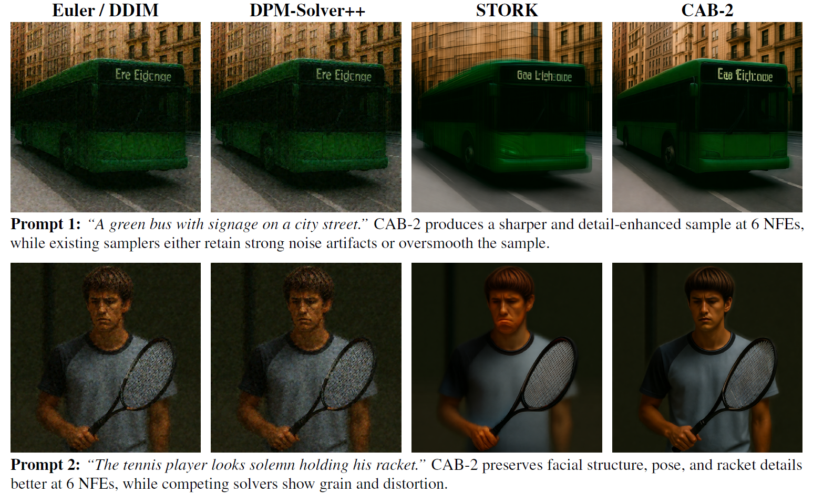
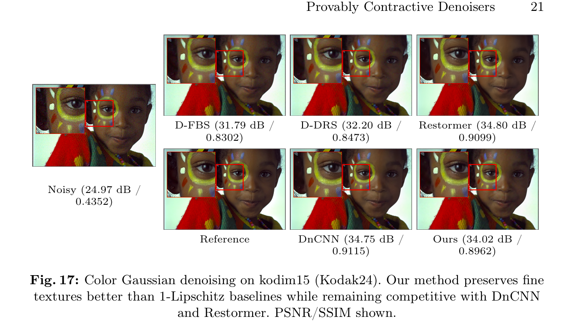
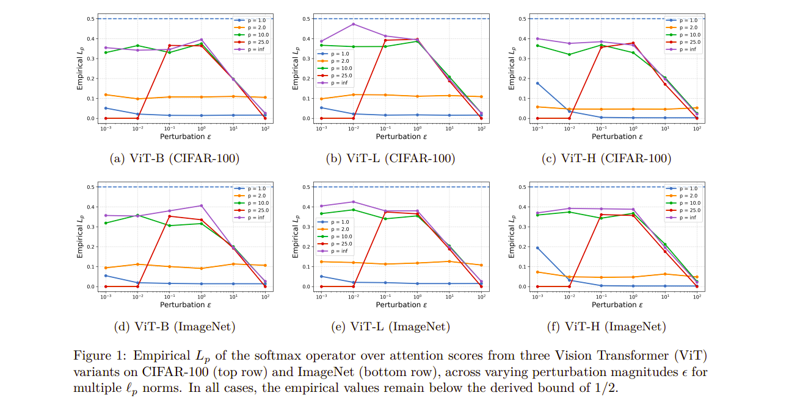
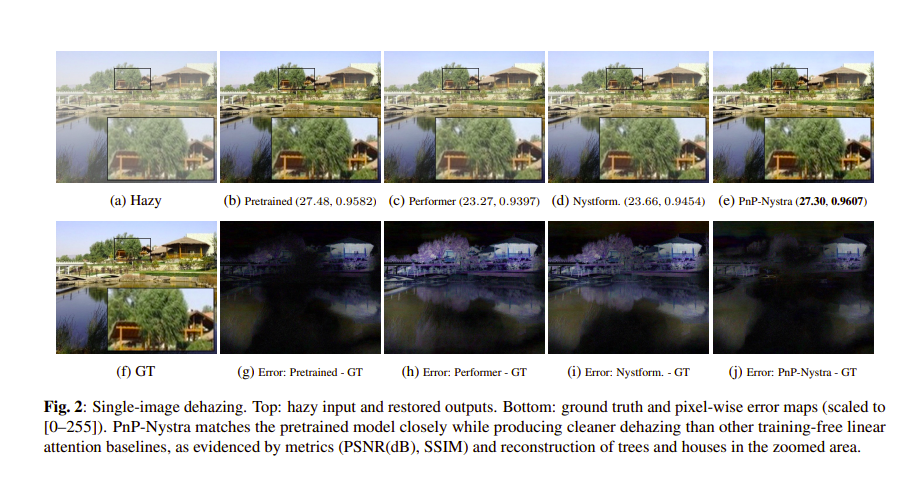
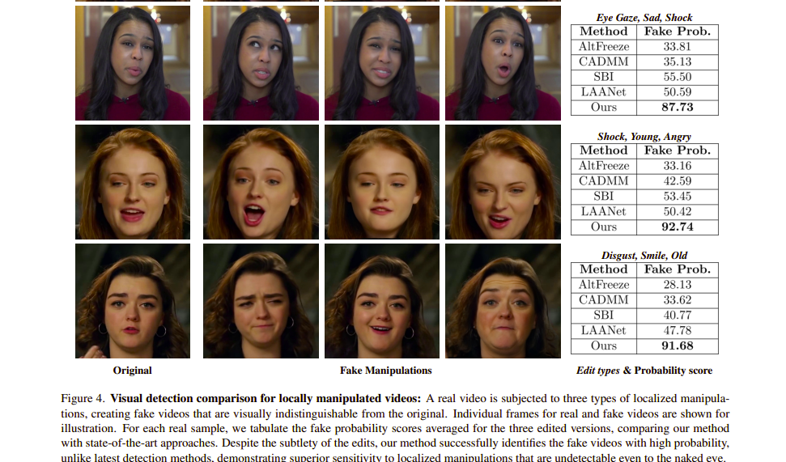

Lab Publications

CAB: Accelerating Flow and Diffusion Sampling via Rectification and Corrected Adams-Bashforth
arxiv, 2026.

Provably Contractive and High-Quality Denoisers for Convergent Restoration
British Machine Vision Conference (BMVC), 2026.

Softmax is 1/2-Lipschitz: A tight bound across all ℓp norms
Transactions on Machine Learning Research (TMLR), 2025.

Plug-and-Play Linear Attention for Pre-trained Image and Video Restoration Models
arXiv, 2025.

Detecting Localized Deepfake Manipulations Using Action Unit-Guided Video Representations
IEEE/CVF Computer Vision and Pattern Recognition (CVPR) Workshops, 2025.